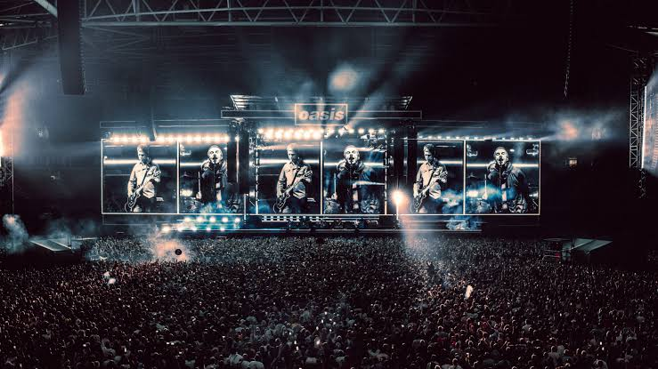
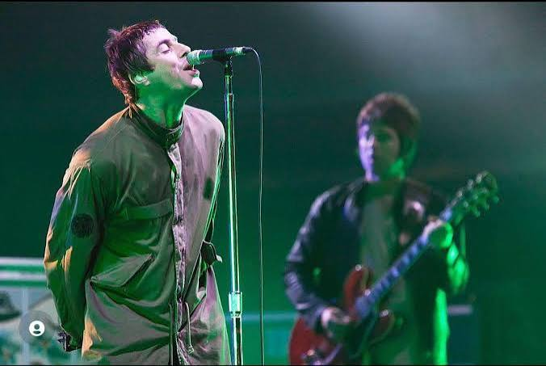
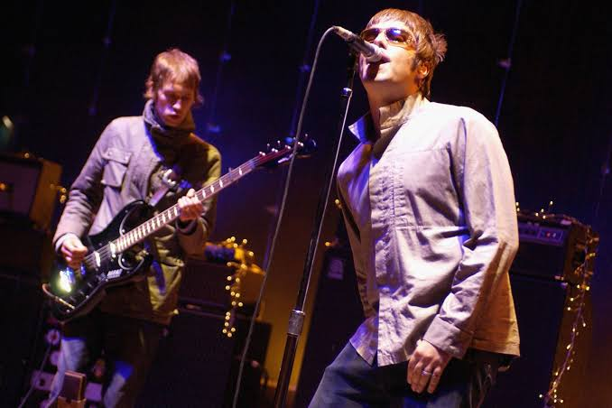
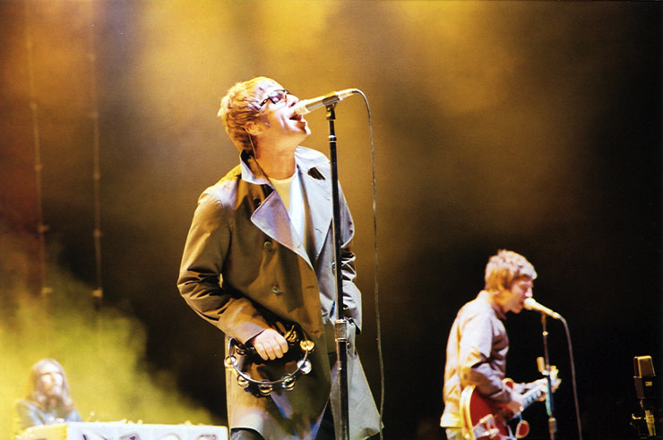
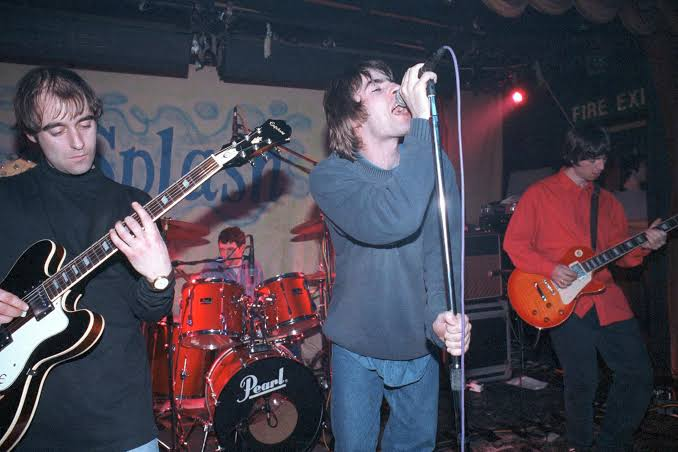
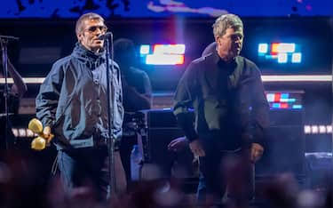
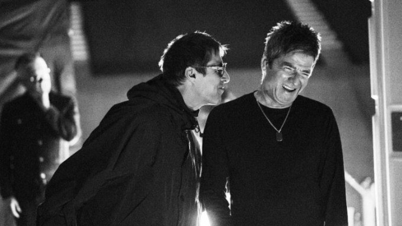
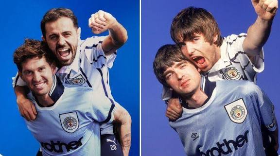
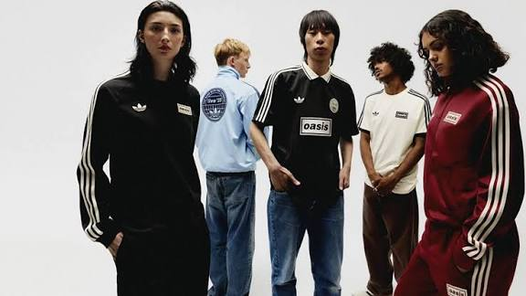

Oasis is set to reunite for a highly anticipated tour in 2025, marking their first performances together in over a decade. Fans can expect a mix of classic hits and new material, as the band takes the stage in major cities across the globe.

The final original run of stadium performances supporting their seventh studio album before the historic hiatus. This world tour reached across multiple continents, defining a bittersweet era for the band.

The 2005-06 tour supported the band's sixth studio album, "Don't Believe the Truth." It featured a series of sold-out shows across Europe and North America.

The 2002-03 tour supported the band's fifth studio album, "Heathen Chemistry." It featured a series of sold-out shows across Europe and North America.

The 1994-95 tour supported the band's debut studio album, "Definitely Maybe." It featured a series of sold-out shows across the UK and Europe.
England enjoyed one of their most memorable FIFA World Cup nights by beating Mexico 3-2 in a last-16 tie for the ages at the daunting Azteca Stadium, and afterwards celebrated by singing Oasis hit Wonderwall with supporters.

Oasis is heavily rumoured to be preparing a massive stadium tour for summer 2027, following their highly successful 2025 reunion. Insiders suggest the band is planning a 12 to 20-night residency at Manchester’s Etihad Stadium alongside record-breaking shows at Knebworth Park and further dates across Europe.

The first glimpse into one of the biggest rock comebacks of the decade is finally here. Disney+ has dropped the teaser trailer for 'Don't Look Back In Anger', an all-access documentary chronicling the massive Oasis Live '25 reunion tour.

John Stones and Bernardo Silva recreated a famous photograph to celebrate their special era at Manchester City. The two players have announced their departures at the end of the season but will forever be City legends following their roles in our remarkable period of success, with both of them winning 19 trophies during their time at the Etihad to date.

Adidas Originals and Oasis Live 25’ Drop 2 is now live, with the collection being first available in the UK.

Oasis wrapped up their historic Live '25 reunion tour on November 23, 2025, at Estádio do Morumbi in São Paulo, Brazil. The year-long, 41-stop global stadium tour spanned the UK, Ireland, North America, Asia, Australia, and South America, marking Noel and Liam Gallagher's first live performances since 2009.